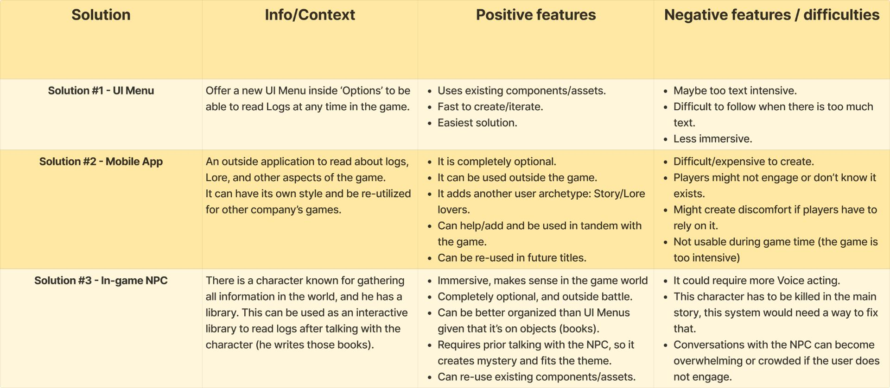

Elden Ring Quest's System
My personal goal is to make the title, especially the UI, easy to use and accessible to players, so the game can feel more intuitive in these areas, without losing the “Souls” like experience or diminishing the title’s difficulty.
Problem Statement
Some users have found the quest system1 to be annoying to use. According to different threads, forums, and videos, it seems that some quests are so random that players cannot complete them without guides.
However some users do defend this obscureness and abstract nature in quests as a trait of the Souls' Franchise.
I believe there is an opportunity to add an optional system (UI, mechanic, or similar) that helps the user track quests, or information gathered around them, so they don’t have to exit the title to check online wikis and engage more with the title (keep retention). This change would be oriented to casual players and should be implemented in a way that is non-mandatory and non-invasive for hardcore players.
It’s worth noting that using guides is a common practice among seasoned players of the Souls genre.
- Background/Area of the problem
Quest system/mechanics - People affected
Casual players, players that had a break from the game and want to go back, players that want to discover everything in the game without breaking immersion. - Impact
Players are interacting less with these systems, experimenting less, and missing content.
1 Sources:
The Problem With Elden Ring's Side Quests
Elden Ring quest system is basically "Where's Wally?", which is not the best approach
Denial about how bad the quest system is.
The quest system…
Can we have an honest discussion about how bad the quest design is?
Elden Ring is my first From Software game. I absolutely love it, but it's not without its faults …
These games are great because they are immersive, and asking for quest markers and trackers undermines and cheapens that.
The quest system in Elden Ring is kinda a headache and it missed some potential
Game is great.. but that quest system is horrible
UX Interviews
Interview Goal
Finding out pain points in the UI elements of the game. How does the user feel with the Quest system? Can it be improved somehow? How does crafting and navigating the UI feel to the user?
This study was conducted with a small group of people
Goals
After studying the first interviews, we can hypothesize that while the quest system’s mystery is a good thing, being too obtuse can cause annoyance among users. There is also the re-onboarding issue where players who left the game for a while and come back do not know where they left on. Therefore the first goals we should cover are:
[Retention goal] The new system should be able to help players to keep track or continue quests, without being obvious or give away the mystery.
Players feel that some quests are mysterious enough while others are too obtuse to understand where to go or what to do next. There are inconsistencies in some quests: Some offer the players markers in the map, or items that have text in them, while others do none of that. This system should balance the “mysterious” factor to be roughly the same and avoid the edges of players being annoyed at too much inconsistency.
[Engagement/Re-engagement goal] The new system must help and ease players' re-onboarding and/or catching up with past/current quests.
Players have expressed interest in having some way to remember where they left the quests when they come back after a while. Since Elden Ring is a very extensive game (+100 hours) it's easy to leave the game and come back later.
[Consistency Goal] It must not break immersion
In the interviews, players have expressed the desire to avoid exiting the game or being outside the main experience, therefore losing immersion in the title. Soul’s players want the challenge and the immersion as intact as possible.
UX Challenges
With our goals, I created UX Challenges and studied some competitor solutions to compare and give ideas. The games chosen for this comparison have been Outer Wilds, Amnesia: The Bunker, and Subnautica.
User Journey Map
Solutions Proposal

Chosen Solution
The solution chosen for further research is #3 - In-game NPC.
It offers the best approach to our current goals: Utility, Retention, and Immersion. Its ‘cons’ can be mitigated and its ‘pros’ are very positive for the player.
Breakdown
The new system will be adding functionality to Sir Gideon Ofnir's (NPC) Library, allowing the user to read the books within it. The books will offer past logs, given that the user has talked with Gideon first. This way the user can re-lapse or re-read information that has been already given.
Flows
Wireframes

Wireframe Walkthrough
For more information, and the full project organization/access to the prototypes, please see the Figma file below.
FIGMA FILE